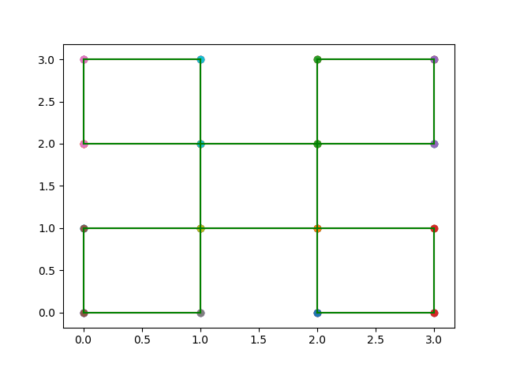

Input 22
5
0 0
1 1
1 1
2 2
2 2
3 3
0 2
1 3
2 0
3 1
Output 22
Measure = 5
Number of Contour Lines = 20
Contour Line Segments:-
2 0 3 0
0 0 1 0
1 1 2 1
2 1 3 1
0 1 1 1
2 2 3 2
0 2 1 2
1 2 2 2
2 3 3 3
0 3 1 3
0 0 0 1
0 2 0 3
1 0 1 1
1 1 1 2
1 2 1 3
2 0 2 1
2 1 2 2
2 2 2 3
3 0 3 1
3 2 3 3
Contour Length = 20
